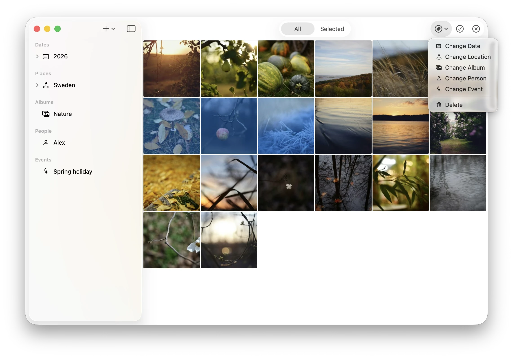
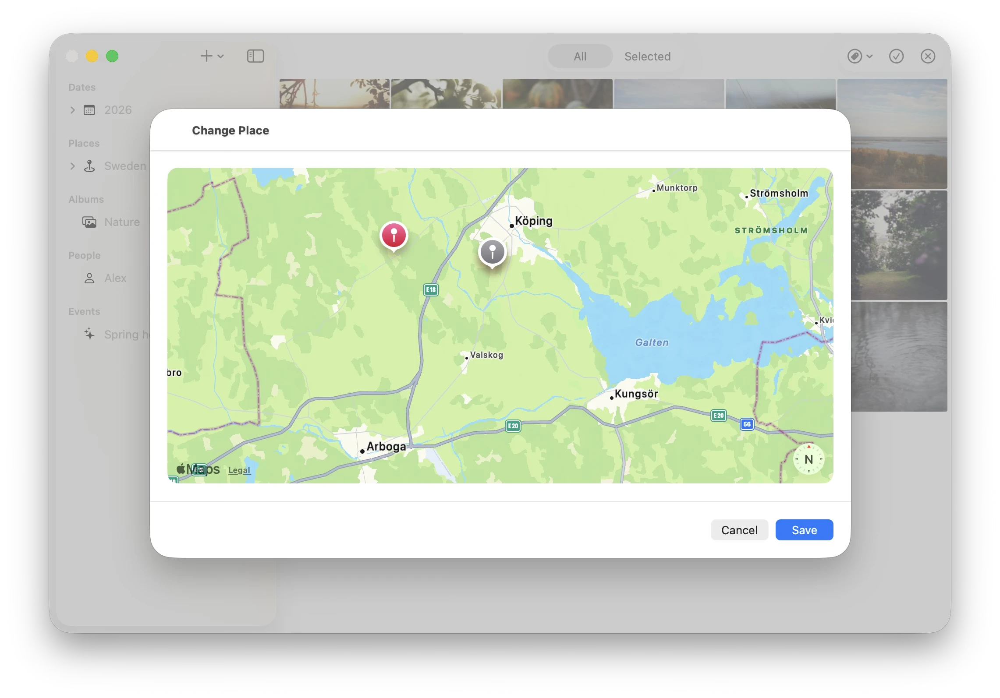

Change dates, assign locations, tag people — from your iPhone, without touching the Mac. Changes are written back to the original files as standard EXIF and XMP, compatible with any app.
Select one photo or a hundred, then change their metadata in a single action. The edit menu appears in context — no separate screen, no wizard.

Photos without GPS, or with wrong coordinates, can be fixed by dragging a pin on a map. The new location is reverse-geocoded on-device and saved back to the file — no coordinates to type, no internet required.
